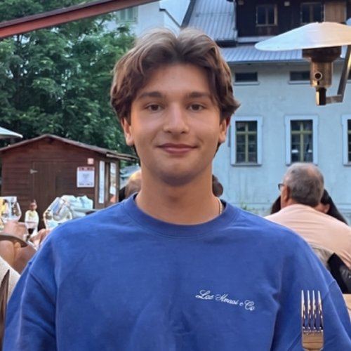
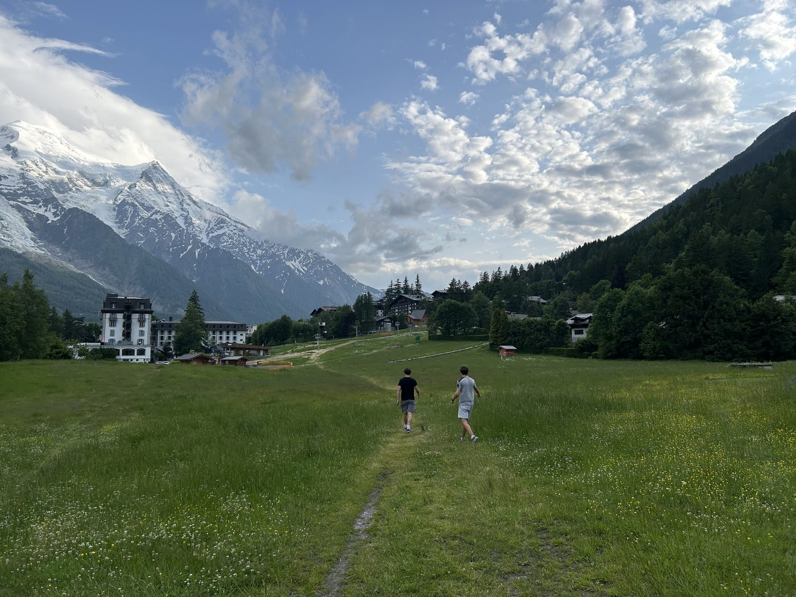
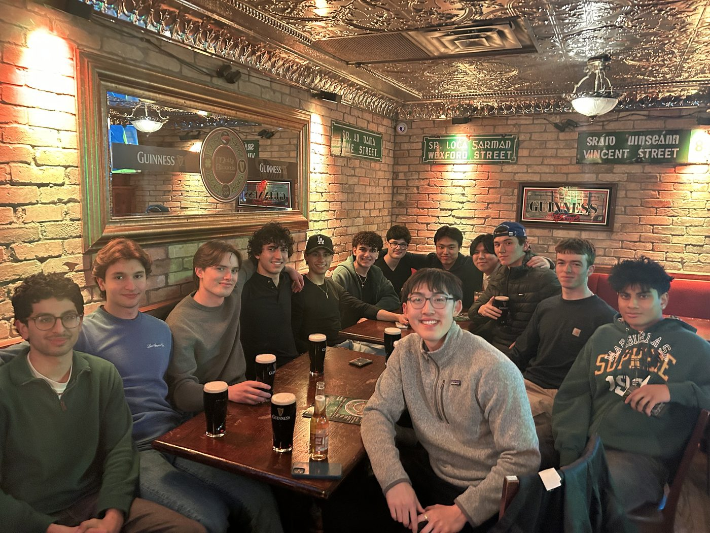
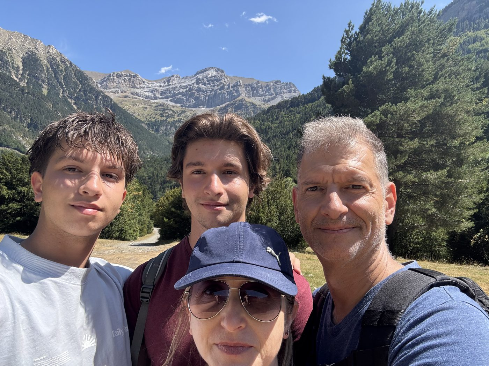
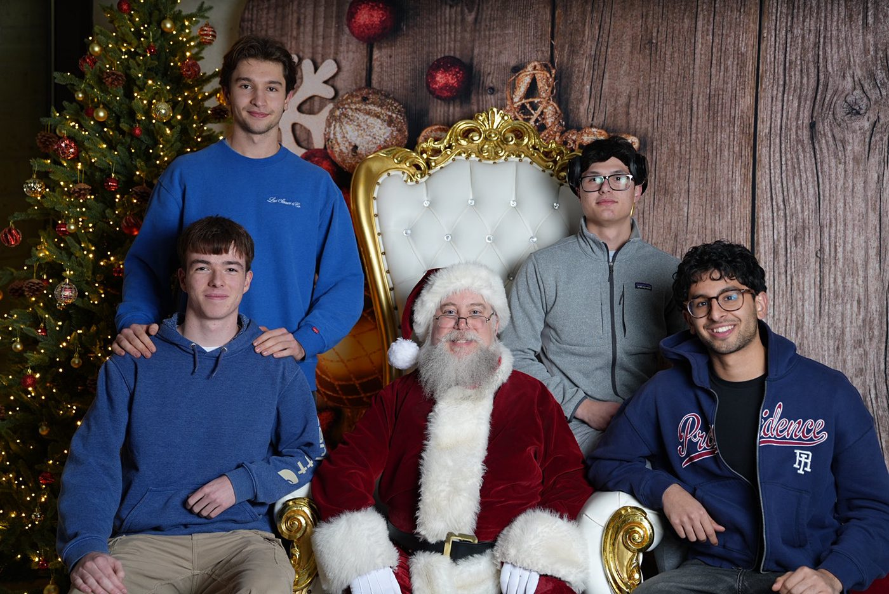
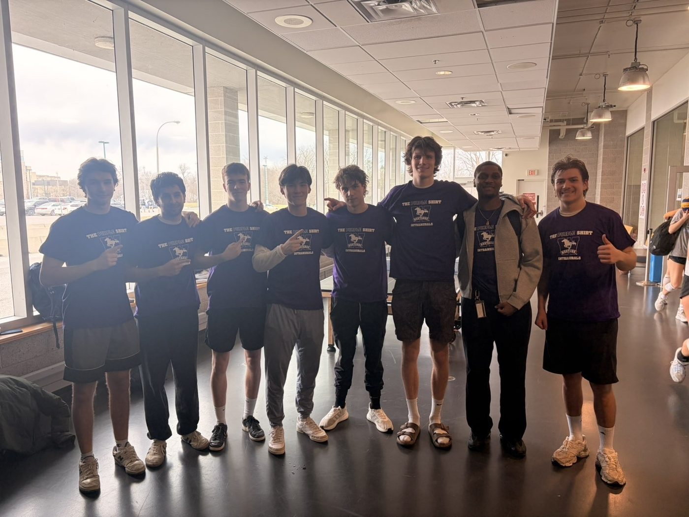
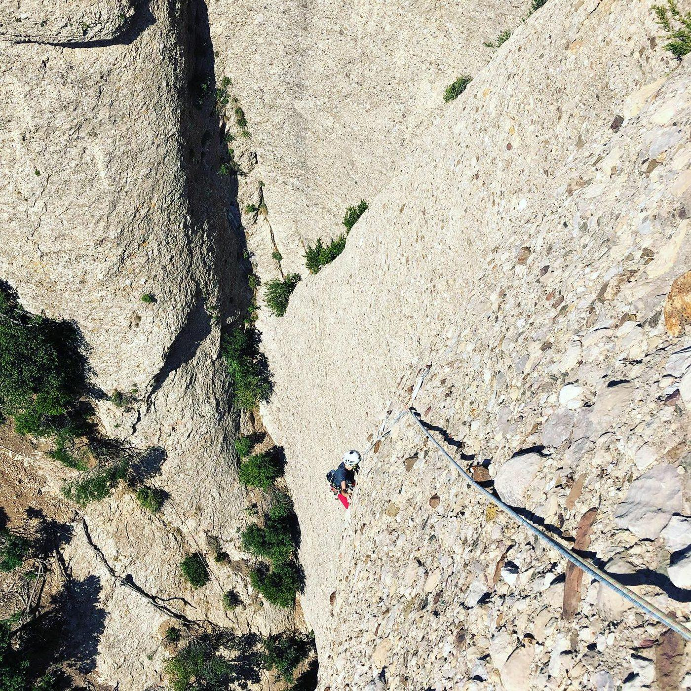
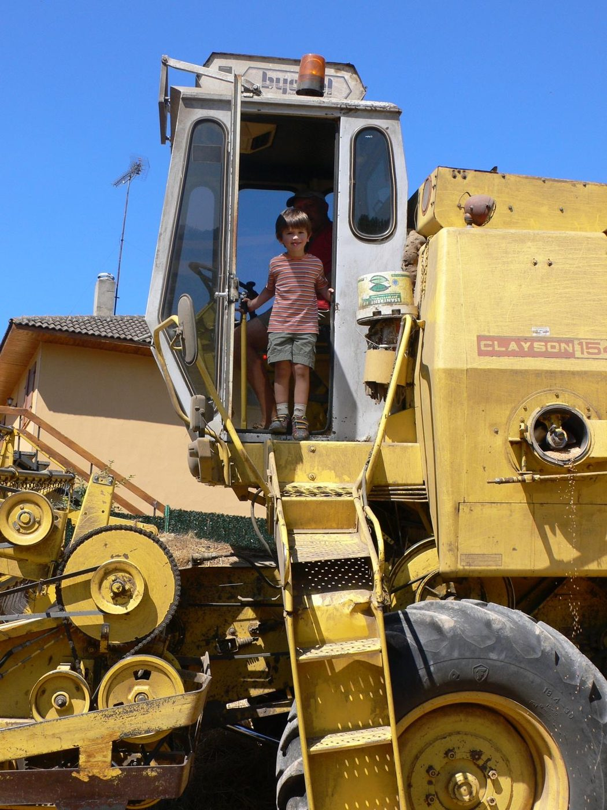
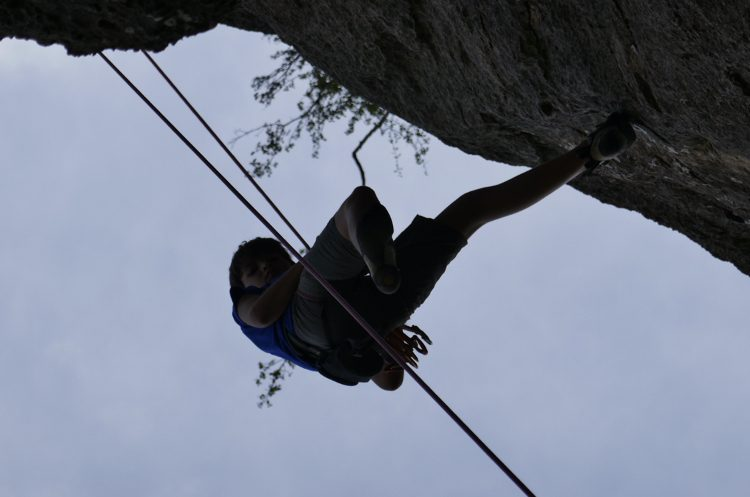

Hi, I'm Marc.

I'm a passionate Mechatronics Engineering and Physics student at Western University. I am most interested in mechanical design, electronics, and manufacturing. The combination of engineering and physics lets me effectively bridge the gap between mechanical, electrical, and software engineering with a strong foundation in the physical theory behind them.
Beyond academics, I enjoy spending time with my family and friends, camping, weightlifting, mountain biking, running, playing sports like basketball and soccer, and playing the drums. I'm naturally collaborative and enjoy working in teams, which has helped me become an effective leader in group projects.








